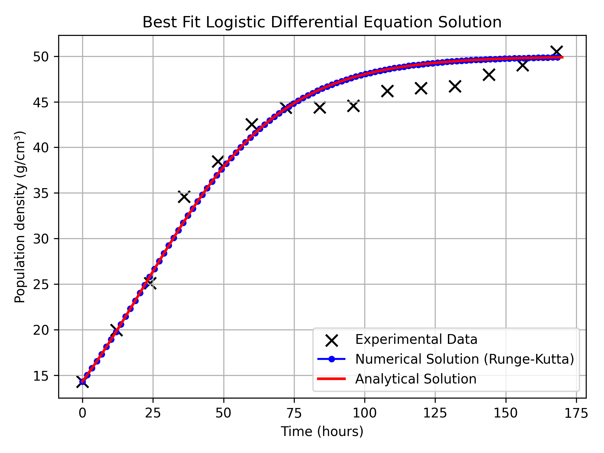
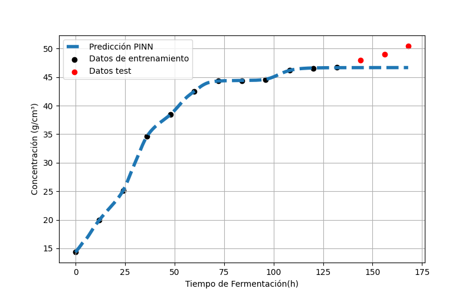

Corroboración del Modelo de Gompertz para el Crecimiento de Gránulos de Kéfir de Agua#
En este trabajo se logró corroborar la validez de los parámetros del modelo de Gompertz para describir el crecimiento de los gránulos de kéfir de agua. Para ello, se empleó el método numérico de Runge–Kutta de cuarto orden (RK4), el cual permitió resolver la ecuación diferencial asociada al modelo de manera precisa y estable.
Los resultados obtenidos mediante RK4 mostraron una alta concordancia entre la solución numérica y los datos experimentales de crecimiento testigo de nuestra fuente de datos, lo que confirma que los parámetros estimados del modelo de Gompertz representan adecuadamente la dinámica del sistema biológico estudiado. Esta corroboración respalda el uso del modelo como una herramienta confiable para describir el comportamiento temporal del crecimiento de los gránulos.
{kind=link}

Ajuste de PINN#
Adicionalmente, se logró ajustar una Red Neuronal Informada por la Física (Physics-Informed Neural Network, PINN) a los mismos datos experimentales de crecimiento, utilizando igualmente el modelo logístico como restricción física.
{kind=link}

Parámetro |
Estimación |
Real |
Error absoluto |
Error relativo % |
|---|---|---|---|---|
r |
0.0491 |
0.046 |
0.0031 |
6.74 |
m |
46.70 |
47.81 |
1.11 |
2.32 |
El PINN incorporó la ecuación diferencial del modelo dentro de su función de pérdida, permitiendo que la red aprendiera el comportamiento del sistema respetando las leyes que gobiernan su dinámica.
El ajuste mediante PINNs mostró desempeño consistente con el método numérico clásico, reproduciendo de forma adecuada la evolución del crecimiento de los gránulos de kéfir de agua. Estos resultados no ayudarán para la siguiente etapa del proyecto que consiste en resolver un problema inverso con los datos que tenemos a la mano.